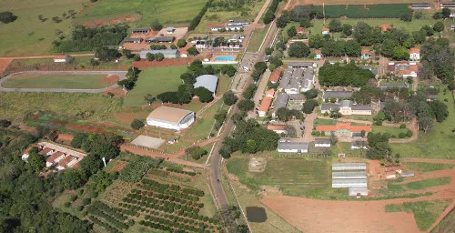

Sobre Mim
Olá! Sou Rodrigo Simão, estudante de Sistemas de Informação. Gosto de programação, tecnologia e música eletrônica. Abaixo você encontra mais informações sobre minha formação e trajetória profissional.
Formação
Atualmente estou cursando Sistemas de Informação na instituição IF Goiano - Campus Urutaí, com foco em desenvolvimento backend com java.

Experiência Profissional
Trabalhei em alguns projetos fullstack e alguns de desenvolvimento web, com foco em JavaScript, HTML e CSS, além de ter experiência em estruturas de dados e algoritmos.
Portfólio
Aqui você encontra alguns dos meus projetos. Clique aqui para ver mais.